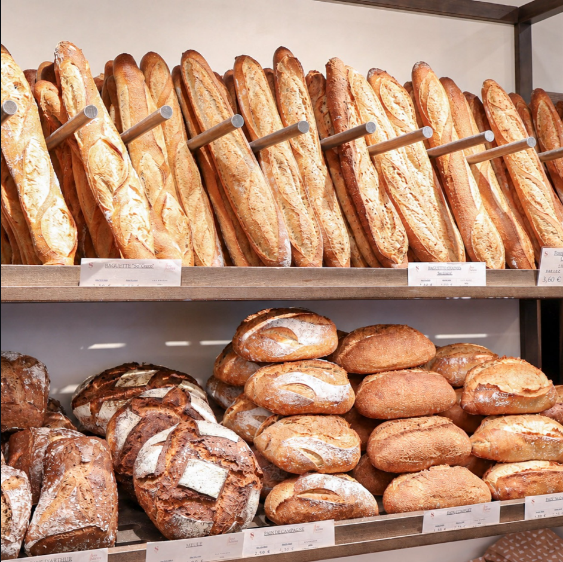
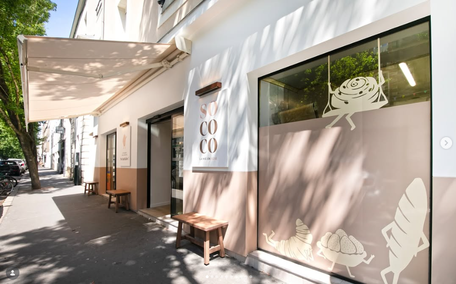
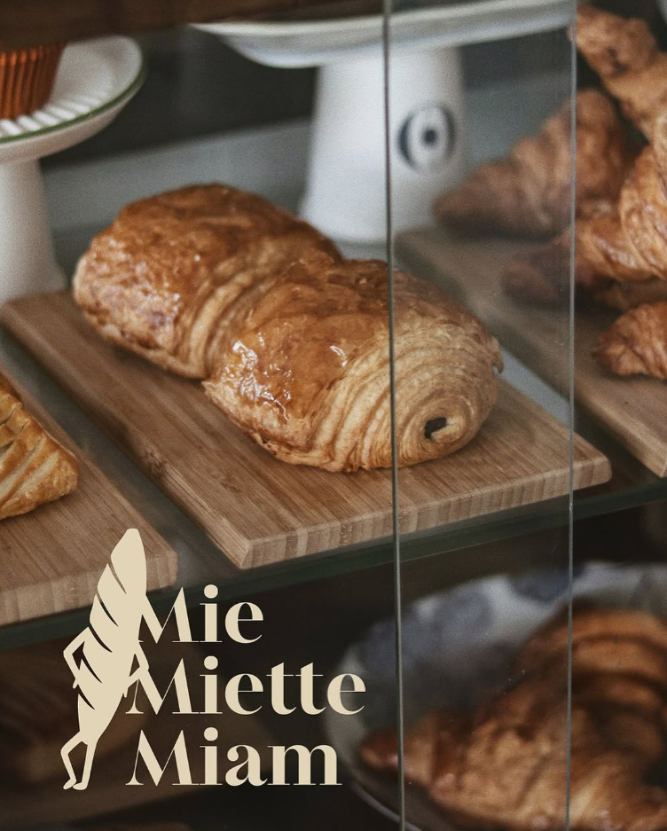
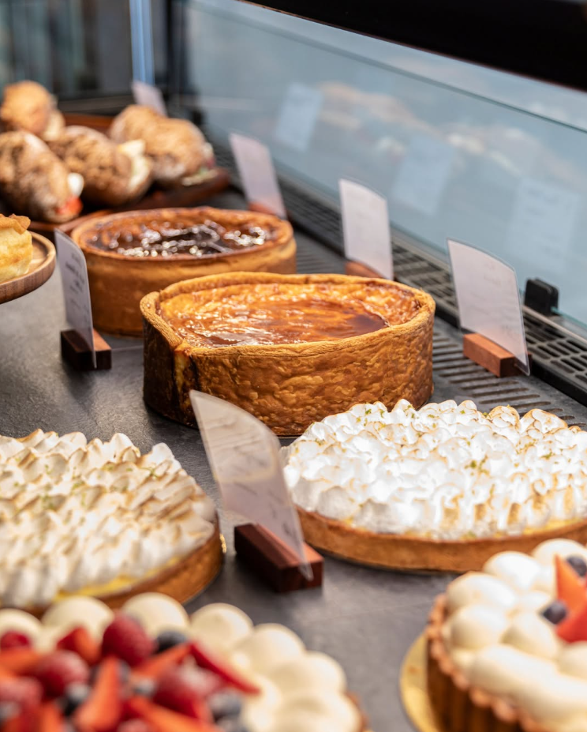
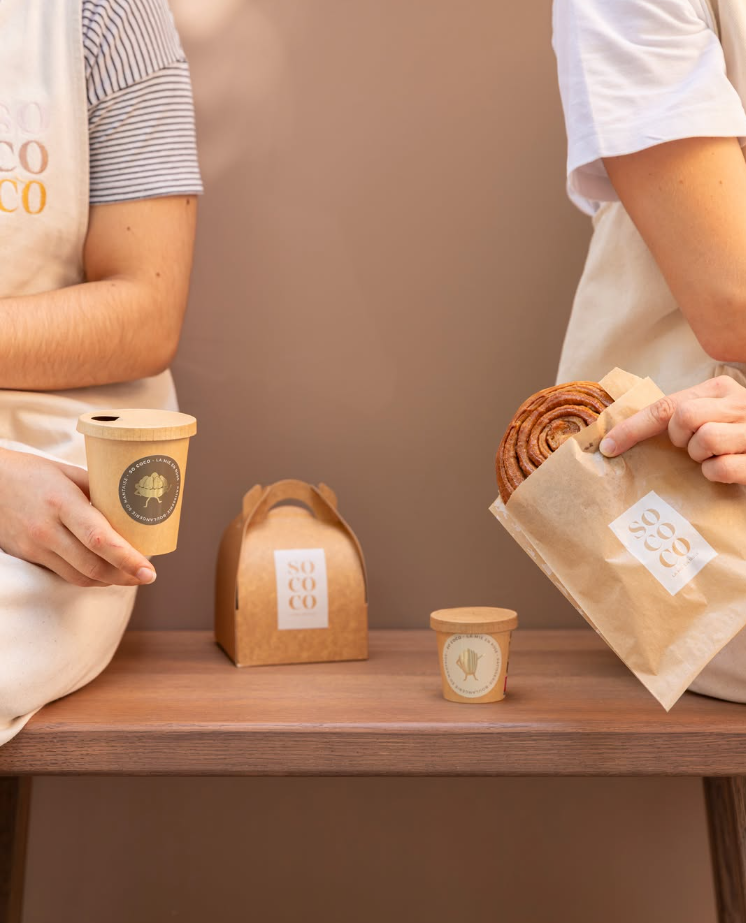
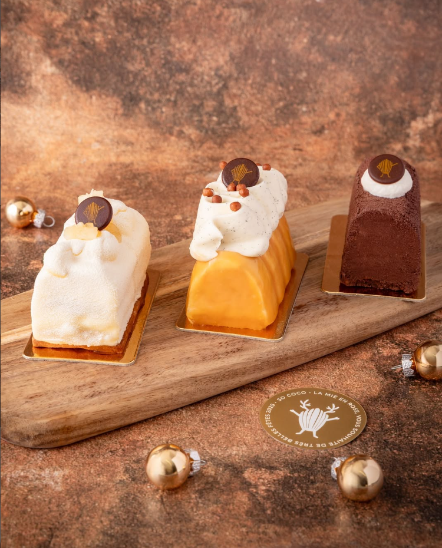
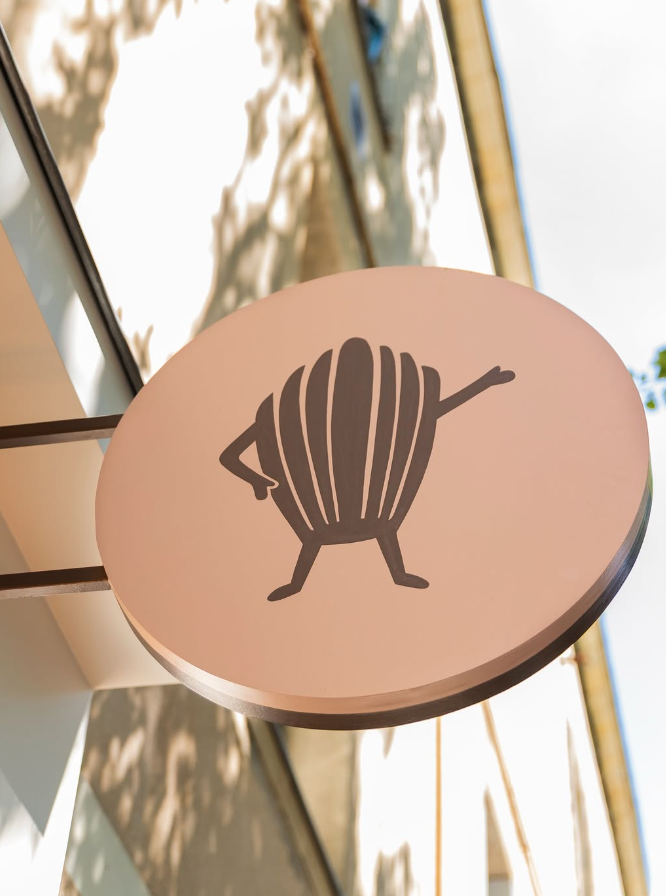
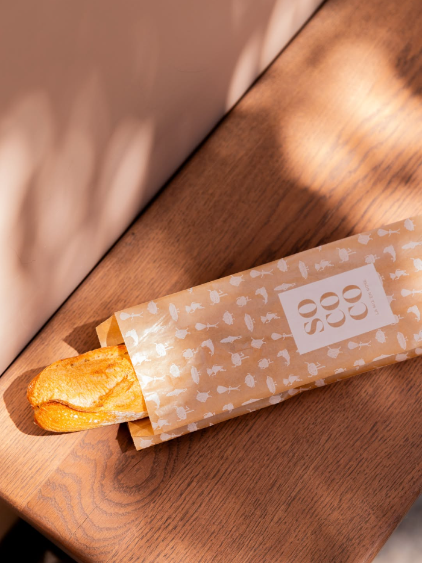

Boulangerie
Le fournil du quotidien
La gamme travaillée avant l’ouverture cite notamment la Baguette La Silex, la Tourte de Meule Bio, la Tourte aux Alouettes, les Norvégiens aux graines et aux fruits ainsi que la Tourte de Seigle.
Pâtisserie & boulangerie artisanale · Nantes
Au 2 rue Lamoricière, So Coco réunit pains, viennoiseries, pâtisseries artisanales, snacking et une identité douce, joyeuse et très nantaise.


La sélection
Le site met en avant uniquement des produits et informations publiquement documentés : pains artisanaux, viennoiseries, pâtisseries, snacking, pains bio et créations de saison.

Boulangerie
La gamme travaillée avant l’ouverture cite notamment la Baguette La Silex, la Tourte de Meule Bio, la Tourte aux Alouettes, les Norvégiens aux graines et aux fruits ainsi que la Tourte de Seigle.

Pâtisserie
Entremets, tartes, desserts de saison et créations pâtissières participent à l’identité de la maison. Les visuels transmis donnent le ton : précis, gourmand et lumineux.

À emporter
Logo, packagings, signalétique et façade composent une image douce et cohérente, autour de tons poudrés, de bois et d’un univers maison très reconnaissable.
La maison So Coco
Nantaise d’origine, Chloé Béliard a lancé So Coco en 2025. Les informations publiques évoquent une offre faite maison, une sensibilité aux matières premières et une sélection de pains, viennoiseries, snacking et pâtisseries artisanales.


Esprit de la maison
Une boulangerie-pâtisserie où la façade, le fournil, la vitrine et le packaging racontent la même histoire.
Doux, artisanal,
gourmand, nantais.

Avis & infos utiles
Note Google relevée avec 122 avis. Les coordonnées publiques mentionnent également les paiements CB / Visa / Mastercard / titres restaurants ainsi qu’une prestation de livraison à domicile.
Voir sur Google MapsLa boutique communique publiquement sur une offre artisanale complète, du pain au dessert, avec une gamme de saison et des créations maison.
Les moyens de paiement mentionnés publiquement incluent carte bancaire, Visa, Mastercard et titres restaurants.
Les fiches publiques associent So Coco à une prestation de livraison à domicile et à une démarche autour de l’agriculture biologique.
L’univers visuel transmis joue sur les teintes blush, le bois, les lignes douces et une signature graphique immédiatement reconnaissable.
Infos pratiques
44100 Nantes · Quartier Bon Port / Canclaux. À quelques pas de la place René Bouhier.